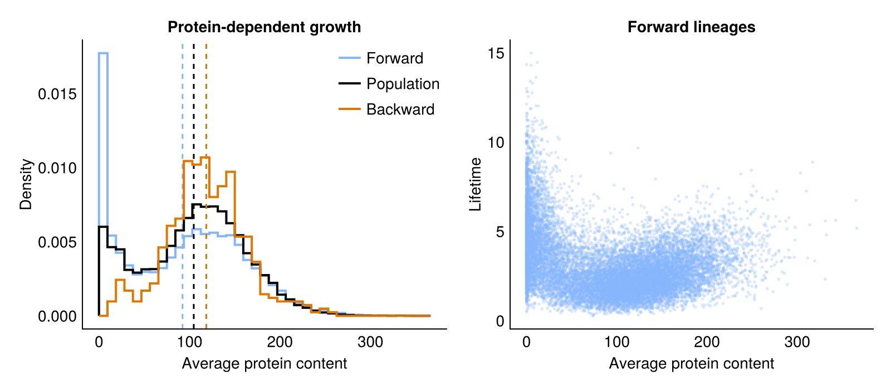
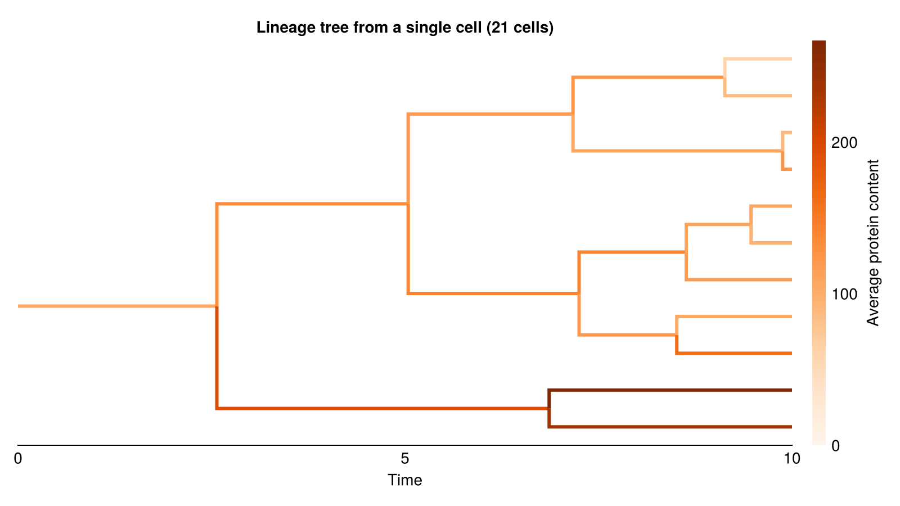

Protein-Dependent Growth
This model is inspired by Piho & Thomas, "Feedback between stochastic gene networks and population dynamics enables cellular decision-making", Sci. Adv. (2024).
A gene G switches on and off at random, and while on, it produces a protein P in bursts. The protein P in turn increases the growth rate of the cell, which causes cell-to-cell variability in growth rates. We can implement this in Catalyst.jl as follows:
using Catalyst
using Distributions
import Distributions: Geometric
@register_symbolic Geometric(p) # allows random burst sizes in reactions
@parameters b
burst_size = rand(Geometric(1 / (1 + b)))
rn = @reaction_network begin
@species G_on(t) G_off(t) P(t)
@variables R(t) # time to division
@parameters k_on k_off f K n r_max
k_on, G_off --> G_on
k_off, G_on --> G_off
f, G_on --> G_on + $burst_size * P # protein production
@equations begin
D(R) ~ -(1 + hill(P, r_max - 1, K, n))
end
end
p = [ :k_on => 0.05, :k_off => 0.05, # gene switching rates
:f => 10.0, :b => 4.0, # burst frequency while the gene is on, and mean burst size
:K => 30.0, # protein number at half-maximal growth rate
:n => 4, # Hill coefficient of the growth rate
:r_max => 2.0 ] # maximal growth rate
cycle = Gamma(5, 1.0); # cell cycle duration in the absence of proteinDivision
A cell divides once its remaining lifetime R reaches 0. When it divides, proteins are partitioned binomially between the two daughters.
using Chemostats
using Chemostats: Offspring, BinomialPartition
cb_div = Chemostats.DivideCallback(rn.R ~ 0)
divide_cell = Offspring(:P => BinomialPartition(), :R => cycle);We tell Chemostats to record the average protein content by overriding Chemostats.get_data:
using StatsBase: ProbabilityWeights
function Chemostats.get_data(cell::DECell{I,typeof(divide_cell)}) where {I}
sol = cell.int.sol
mean(sol[:P][1:end-1], ProbabilityWeights(diff(sol.t)))
end;We create a HybridProblem to simulate the cells. The remaining time R follows an ODE, and the gene state and protein number changes by jumps.
using OrdinaryDiffEqTsit5
using JumpProcesses
u0 = [ :G_on => 1, :G_off => 0, :P => 30, :R => mean(cycle) ]
prob = HybridProblem(rn, u0, (0., Inf), p; callback = cb_div)
create_population(L) = [ DECell(prob, Tsit5(), divide_cell) for _ in 1:L ];Simulating populations
We first simulate L individual lineages using Chemostats.Forward, and then a population of L competing lineages using Chemostats.Strict. In both cases we record the entire lineage tree with save_mode = :full.
L = 50
tmax = 1000.0
chem_fwd = Chemostats.simulate(create_population(L), tmax, Chemostats.Forward(L); save_mode = :full)
chem = Chemostats.simulate(create_population(L), tmax, Chemostats.Strict(L); save_mode = :full);The data we stored for each node is the average protein content of the cell. We obtain a backward lineage by tracing the ancestors of a living cell.
means_fwd = [ node.data for node in values(chem_fwd.tree) ]
means_pop = [ node.data for node in values(chem.tree) ]
means_bwd = [ node.data for node in Chemostats.ancestors(chem.tree, first(chem.pop)) ]
(forward = mean(means_fwd), population = mean(means_pop), backward = mean(means_bwd))(forward = 92.32836593884392, population = 104.72937121293651, backward = 118.58956495410501)We see that forward, population and backward statistics are all different. Cells that produce more protein divide faster, and are thus overrepresented in the population and in ancestral lineages.
We next compare cell lifetimes with average protein content. Here we ignore cells that are currently alive and have not yet divided.
divided = filter(!Chemostats.is_alive, chem_fwd.tree)
lifetimes = [ Chemostats.lifetime(node) for node in divided ]
means_div = [ node.data for node in divided ];Results
Plotting code
using CairoMakie
set_theme!(theme_minimal())
blue, orange = colorant"#85b5fb", colorant"#e07700"
fig = Figure(size = (800, 350))
ax = Axis(fig[1, 1]; xlabel = "Average protein content", ylabel = "Density", title = "Protein-dependent growth")
bins = range(0, maximum(vcat(means_fwd, means_pop, means_bwd)); length = 40)
for (means, label, color) in [ (means_fwd, "Forward", blue), (means_pop, "Population", :black),
(means_bwd, "Backward", orange) ]
stephist!(ax, means; bins, normalization = :pdf, label, color, linewidth = 2)
vlines!(ax, [ mean(means) ]; color, linestyle = :dash)
end
axislegend(ax)
ax2 = Axis(fig[1, 2]; xlabel = "Average protein content", ylabel = "Lifetime", title = "Forward lineages")
scatter!(ax2, means_div, lifetimes; color = (blue, 0.3), markersize = 4);Precompiling packages...
6309.5 ms ✓ Chemostats → MakieExt
1 dependency successfully precompiled in 8 seconds. 332 already precompiled.

A lineage tree
We can visualise the resulting lineage trees using BasicTreePlots.jl. Chemostats can export trees in Newick format, which can be read by many tree-handling packages.
chem = Chemostats.simulate(create_population(1), 20.0, Chemostats.Strict(L, false); save_mode = :full)
tree = chem.tree
root = only(keys(Chemostats.roots(tree)))
tspan = (0, 10.)
first_cells = Chemostats.Trees.alive_during(tree, tspan)TreeView(21 nodes)Plotting code
using BasicTreePlots
using NewickTree: readnw
# NewickTree ignores the length of the root branch, so we add a parent above the root
nwtree = readnw("(" * chop(strip(Chemostats.Trees.newick(first_cells))) * ");")
# `descendants` lists the same cells in preorder, like the Newick tree
protein = [ node.data for node in Chemostats.descendants(tree, root; self = true, tspan) ]
colorrange = (0, maximum(protein))
fig = Figure(size = (800, 450))
ax = Axis(fig[1, 1]; xlabel = "Time", title = "Lineage tree from a single cell ($(length(protein)) cells)")
hideydecorations!(ax)
hidespines!(ax, :l, :r, :t)
tp = treeplot!(ax, nwtree; branchcolor = [ protein[1]; protein ], branchwidth = 3, colormap = :Oranges, colorrange)
translate!(tp, tspan[1], 0, 0) # the plotted tree starts at 0, at the birth of the root
xlims!(ax, tspan...) # cells alive at the end of `tspan` are cut off
Colorbar(fig[1, 2]; colormap = :Oranges, limits = colorrange, label = "Average protein content");
This page was generated using Literate.jl.